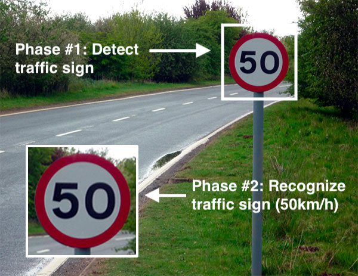

Welcome to my Innovative corner!
Traffic sign recognition (TSR) represents an important feature of advanced driver assistance systems, contributing to the
safety of the drivers, pedestrians and vehicles as well.
Developing TSR systems requires the use of computer vision techniques, which could be considered fundamental in the field of pattern recognition in general.
Despite all the previous works and research that has been achieved, traffic sign detection and recognition still remain a very challenging problem, precisely if we want to provide a real time processing solution.
In this paper, we present a comparative and analytical study of the two major approaches for traffic sign detection and recognition. The first approach is based on the color segmentation technique and convolutional neural networks (C-CNN),
while the second one is based on the fast region-based convolutional neural networks approach (Fast R-CNN).
